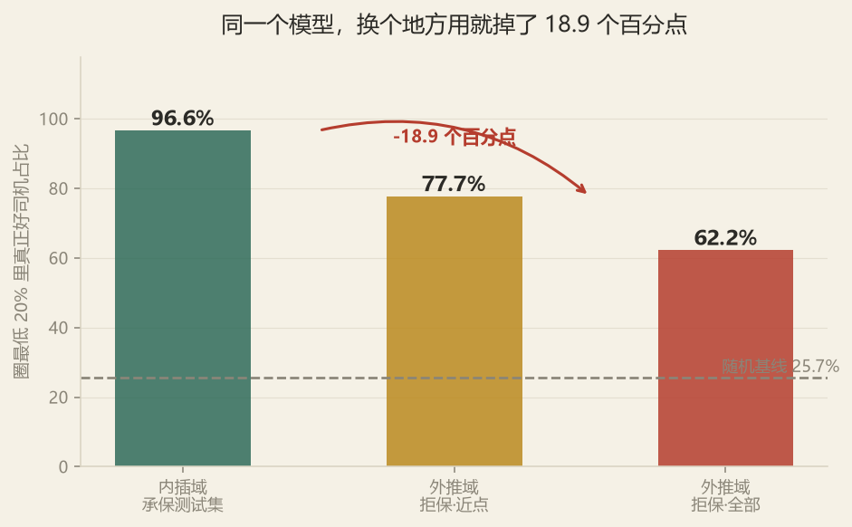
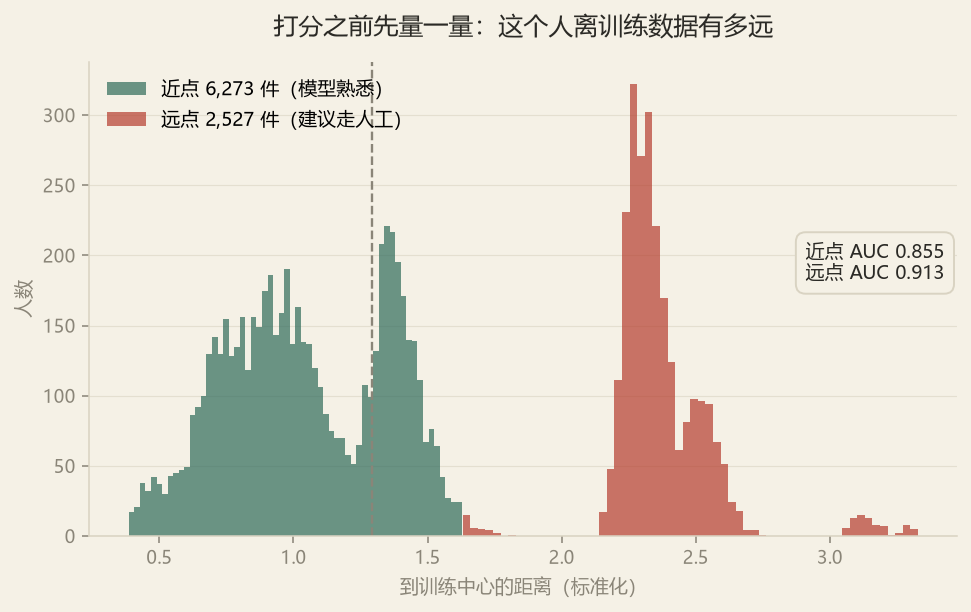
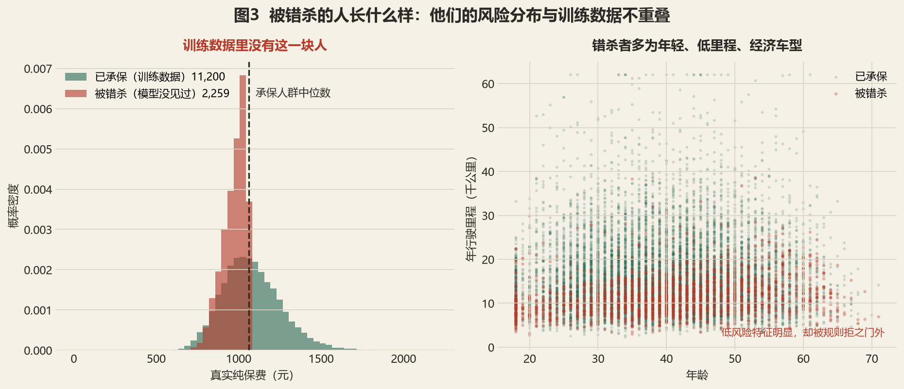

外推风险：18 个样本的教训
这是全库最反直觉、也最值钱的一页。模型在训练人群里指标漂亮， 在没见过的那群人里悄悄反转——而且业务报表上看不出来。我们亲身踩过， 把整个过程原样讲给你。
给模型一个它从没见过的人打分，会发生什么。这是本案例最反直觉的一页。
第一版模型怎么翻车的
初版数据生成器里，规则对性能车扣分太狠：816 件性能车申请，只放行了 223 件（承保率 27.3%）。后果链条是这样滚起来的：
模型只见过 18 个性能车好司机
18 个样本——任何统计结论在这个规模上都是噪声。而这 18 件恰好偏年轻、偏便宜。
模型学出「性能车风险低」
在训练集里，这 18 个人的赔款确实低。模型不知道这是抽样巧合，它照单全收。
预测纯保费最低的 10% 档，90% 被性能车占据
798 件性能车拒保件被整体推进「最值得救」的档位。而它们的真实成本 比拒保人群平均还贵。
这不是「算法不行」，是核保规则把某一类人整体挡在了训练数据之外。 凡是被系统性排除的人群——特定车型、特定地区、特定渠道——模型对他们说的话都是猜的。 修法也不在模型里，在数据里：让承保规则给每个特征水平都留一条缝。
护栏：特征覆盖体检
修复后我们在数据生成器里加了一段「护栏」，每次生成数据自动体检一遍： 任何一个特征水平在承保人群里覆盖率低于 5%，立刻报警。 修复后的体检结果：
| 维度 | 各水平的承保率 | 结论 |
|---|---|---|
| 渠道 | 代理 73.8% / 直销 72.3% / 线上 7.8% | 线上仍然偏低——这是故事的一部分（规则偏见），但已不至于让模型完全失明 |
| 车型 | 经济型轿车 57.3% / SUV 52.0% / 新能源车 66.5% / 性能车 27.3% | 性能车从 2.2% 修到 27.3%，223 个训练样本——梯度恢复了 |
| 用途 / 地区 | 家用 61.7% / 营运 9.8%； 东部 62.4% / 北部 63.0% / 南部 61.5% / 西部 21.9% / 中部 63.0% | 全部在安全线以上 |
修好之后，外推的真实代价是多少
模型最终定型后，我们做了内插域与外推域的对照——这是全库我认为最应该被截图贴在 工位上的一张图：

但注意一个好消息：排序能力并没有崩——外推域全体 AUC 0.833 （近点 0.855、远点 0.913）。 掉得最狠的是纯度，不是排序。含义很微妙：模型在外推域依然知道「谁比谁好」， 但它对「好到什么程度」的判断已经不可信了（预测均值 1,632 元， 比真值 1,222 元虚高 33.6%）。 所以落地方案里我们只用它排序、绝不用它的绝对数值定价。


模型是个只在你家小区开过车的司机。把它放到陌生的城市，它的方向盘还是稳的 （排序没崩），但它的「大概还有几公里」已经全是猜的（校准崩了）。
每个模型上线方案都应当回答两个问题：「推理对象和训练人群差多远？」 （OOD 距离分布）和 「远的那部分人怎么办？」（降级为人工，还是直接不用？）。 本库的答案是清单分级：近点走模型、远点走人工——而不是把模型一刀切地全用或全不用。
本库全部结论由
ai-kb/code 中的模拟数据与手写模型产生，数字统一来自 out/facts.json（三个动画的数字来自 out/anim_facts.json，由 node code/_animfacts.js 复算），可一键复现。看不懂的词见 术语表 · 想看源代码代码入口 · 读完还是飘？看 一页讲清楚 · 关于这个库 · 关于西红精算 · 知识星球：用数据看保险的精算师们